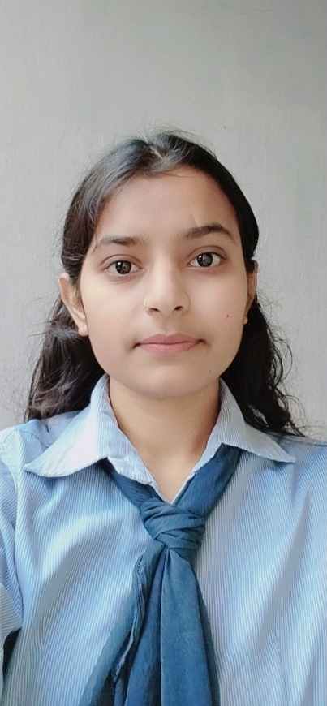

DIVYANSHI RAJPUT
22 years • Kanpur, Uttar Pradesh • +91 6387247906 |
 |
| Degree | Passing Year | Institute | Grade / Percentage |
|---|---|---|---|
| M.C.A. | 2027 | NIT Tiruchirappalli | 8.56 |
| B.C.A. | 2023 | Dr. Virendra Swaroop Institute, Kanpur | 78.1% |
| 12th | 2020 | Shivaji Inter College, UPMSP | 75% |
| 10th | 2018 | Shivaji Inter College, UPMSP | 87% |